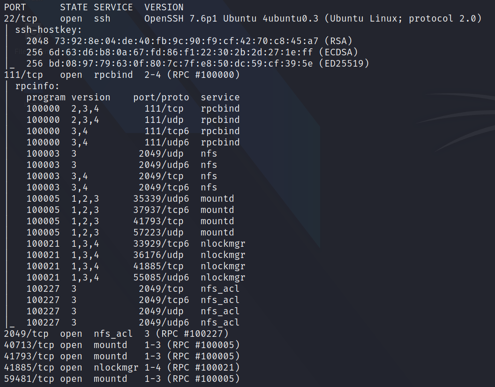

2020/10/13
- Network File System allows a system to share directories and files with others over
a network
- by using NFS, users and programs can access files on remote systems almost as if they were local
files
- it does this by mounting all, or a portion of a file system on a server
- the portion of the file system that is mounted can be accessed by clients with whatever
privileges are assigned to each file
- first, the client will request to mount a directory from a remote host on a local directory just
the same way it can mount a physical device
- the mount service will then act to connect to the relevant mount daemon using RPC (Remote
procedure call)
- the server checks if the user has permission to mount whatever directory has been requested
- it will then return a file handle which uniquely identifies each file and directory that is on
the server
- if someone wants to access a file using NFS, an RPC call is placed to NFSD (the NFS daemon) on
the server
- this call takes parameters such as:
-
- The file handle
- The name of the file to be accessed
- The user's, user ID
- The user's group ID
- these are used in determining access rights to the specified file
- this is what controls user permissions, I.E read and write of files.
- your client’s system needs a directory where all the content shared by the host server in the
export folder can be accessed
- you can create this folder anywhere on your system
- once you've created this mount point, you can use the "mount" command to connect the NFS share
to the mount point on your machine
- Like so: sudo mount -t nfs IP:share /tmp/mount/ -nolock
-
- sudo Run as root
- mount Execute the mount command
- -t nfs Type of device to
mount, then specifying that it's NFS
- IP:share The IP Address of the NFS server,
and the name of the share we wish to mount
- -nolock Specifies not to use NLM locking
- 
-

-

- By default, on NFS shares- Root Squashing is enabled, and prevents anyone connecting
to the NFS share from having root access to the NFS volume
- Remote root users are assigned a user “nfsnobody” when connected, which has the least
local privileges
- If this is turned off, it can allow the creation of SUID bit files, allowing a remote
user root access to the connected system